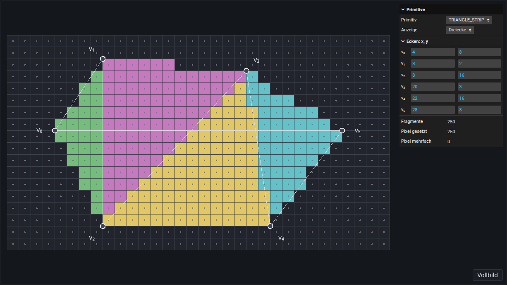
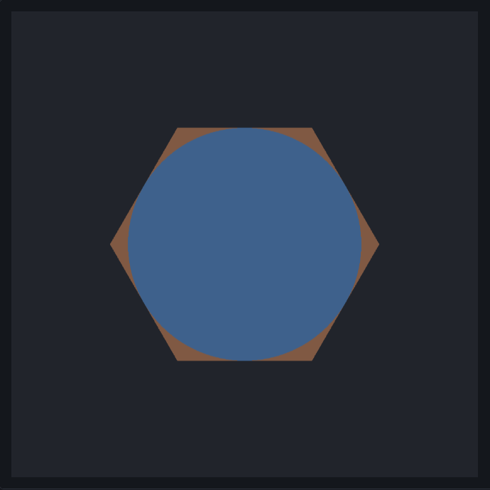

Kapitel 3
Rasterisierungs-Performance
# Dreiecke, Dreiecksstreifen, Dreiecksfächer
GPUs rasterisieren Primitive: Punkte, Linien, Dreiecke, Dreiecksfächer und Dreiecksstreifen (Kapitel 3, Rasterisierung). Ein Polygon wird deshalb vor der Rasterisierung in Dreiecke zerlegt. Davon hängt ab, wie viele Eckpunkte im Vertex-Array stehen, wie oft der Vertex-Shader läuft und ob jedes Pixel des Polygons genau ein Fragment bekommt.
Die Demo zeigt ein Sechseck auf dem Raster aus der Übung „Dreiecksrasterisierung“. Die GPU zeichnet seine Eckpunkte mit einem einzigen Aufruf von drawArrays als das Primitiv, das unter „Primitiv“ gewählt ist, und jedes Dreieck bekommt eine eigene Farbe. Die Anzeige „Fragmente pro Pixel“ zeigt stattdessen, wie viele Fragmente jedes Pixel bekommt: je mehr, desto heller. Rechts stehen die Zahl aller Fragmente, der gesetzten Pixel und der Pixel mit mehr als einem Fragment. Die Eckpunkte lassen sich rechts eingeben oder mit der Maus ziehen.
Aufgabe 1: Primitive
- „Primitiv“ steht auf TRIANGLE_FAN. Wie viele Dreiecke entstehen, welchen Eckpunkt haben alle gemeinsam, und wie viele Eckpunkte bräuchte TRIANGLES für dieselben Dreiecke?
- Ziehe zuerst nach und dann nach . Das Polygon ist beide Male nicht mehr konvex. In welchem Fall deckt der Fächer es noch genau ab, und welches Dreieck hat im anderen Fall eine andere Winding Order als die übrigen? Ziehe danach zurück nach .
- Schalte auf TRIANGLE_STRIP. Welche Dreiecke entstehen jetzt, und warum decken sie das Sechseck nicht ab? Finde eine Reihenfolge der sechs Eckpunkte im Vertex-Array, in der der Streifen das Sechseck genau abdeckt. Trage ihre Koordinaten in dieser Reihenfolge in die Zeilen bis der Tabelle ein und prüfe mit „Fragmente“ und „Pixel mehrfach“.
Mögliche Lösung anzeigen

# Kreis aus einem Quadrat
Ein Kreis mit Mittelpunkt und Radius ist durch die implizite Funktion
gegeben (Kapitel 3, Kreisrasterisierung). Innerhalb des Kreises ist , außerhalb . Die GPU rasterisiert keine Kreise. Ein Kreis lässt sich aber durch Dreiecke annähern, oder er wird aus einem Quadrat geschnitten: Die GPU rasterisiert das Quadrat aus zwei Dreiecken, und der Fragment-Shader verwirft jedes Fragment, dessen Pixelzentrum außerhalb des Kreises liegt (Kapitel 3, OpenGL-Rasterisierungspipeline).
in vec2 point; // pixel centre of the fragment, in pixel coordinates
uniform vec2 m; // centre M
uniform float radius; // radius r
out vec4 fragColor;
void main() {
vec2 d = point - m;
float F = d.x * d.x + d.y * d.y - radius * radius;
if (F > 0.0) {
discard;
}
fragColor = vec4(0.36, 0.62, 0.93, 1.0);
}
point ist die Position in Pixelkoordinaten, die der Vertex-Shader für jeden Eckpunkt weitergibt. Interpoliert ergibt sie für jedes Fragment genau sein Pixelzentrum.
Die Schritt-für-Schritt-Ansicht zeigt ein Quadrat um den Kreis mit und und geht seine Fragmente der Reihe nach durch. Die GPU führt den Fragment-Shader für viele Fragmente zugleich aus; die Reihenfolge dient nur der Anschauung.
Aufgabe 2: Kreis aus einem Quadrat
- Wie oft läuft der Fragment-Shader für das Quadrat, wie viele Pixel werden gesetzt, und welcher Anteil der Aufrufe setzt kein Pixel?
- Welcher Anteil der Aufrufe setzt kein Pixel, wenn sehr groß wird? Wie viele Eckpunkte braucht das Quadrat dabei?
- Warum stimmt das Bild an jedem Pixelzentrum genau mit dem Kreis überein, obwohl die GPU nur zwei Dreiecke rasterisiert?
# Zeit messen
Ein berechnetes Bild heißt Frame (Kapitel 1, Rendering Pipeline), und die Bildwiederholrate gibt an, wie viele Frames pro Sekunde (fps) entstehen (Kapitel 1, Rendering in Echtzeit). Wie lange ein Frame dauert, hängt davon ab, wie viel Arbeit die Stufen der Pipeline haben (Kapitel 3, OpenGL Rendering Pipeline – Rasterisierungsstufe). Der Vertex-Shader läuft einmal pro Eckpunkt. Triangle Setup und Triangle Traversal arbeiten pro Dreieck; in der Dreiecksrasterisierung der Vorlesung werden dabei die Pixelzentren in der Bounding Box des Dreiecks getestet (Kapitel 3, Dreiecksrasterisierung). Der Fragment-Shader und das Merging mit dem Color-Buffer laufen einmal pro Fragment.
Die Demo zeichnet Quadrate („Quadrate“) mit der Seitenlänge in Pixeln in einen Framebuffer aus Pixeln, alle an derselben Stelle und jedes mit einem eigenen Aufruf von drawArrays, mit eingeschalteter Verblendung. Jedes Quadrat besteht aus gleich großen Dreiecken, abwechselnd gefärbt; die Zahl der Fragmente hängt nicht davon ab, wie viele es sind. Nach jeder Änderung misst die Demo einmal mit dem gewählten Verfahren. „Bildwiederholrate“ zeichnet die Quadrate eine Sekunde lang in jedem Frame und zählt die Frames. „Ohne Warten“ misst nur die Aufrufe. „Mit readPixels“ misst wie im Listing, nach einer Aufwärmzeit neunmal; „Zeit pro Messung“ ist der Median, und für „Zeit pro Quadrat“ wird vorher eine leere Messung abgezogen; „us“ steht dort für Mikrosekunden (µs). „Streuung“ ist der Abstand zwischen der längsten und der kürzesten der neun Messungen, bezogen auf den Median. Bei mehr als Dreiecken oder wenn eine Messung länger als 250 ms dauert, misst die Demo nicht und zeigt das unter „Status“.
Aufgabe 3: Zeit messen
- Stelle „Verfahren“ auf „Bildwiederholrate“ und „Seitenlänge“ auf 1024, und erhöhe „Quadrate“ schrittweise. Bis zu welcher Zahl von Quadraten zeigt „fps“ die Bildwiederholrate deines Bildschirms, meist 60 fps? Warum sagt dieser Wert nichts darüber, wie lange das Zeichnen dauert?
- Stelle „Mit readPixels“, Seitenlänge 1024 und die größte Zahl an Quadraten ein, bei der die Demo noch misst, und vergleiche mit „Ohne Warten“. Halbiere danach die Seitenlänge. Warum ist die Zeit ohne Warten so viel kleiner, und warum ändert sie sich mit der Seitenlänge kaum?
- Stelle „Mit readPixels“, Seitenlänge 1024 und 1024 Quadrate ein. Erhöhe dann „Dreiecke pro Quadrat“ schrittweise. Ab welcher Zahl wächst die Zeit deutlich, obwohl die Fragmente gleich bleiben? Wie viele Pixel bedeckt ein Dreieck dort, und welche Arbeit wächst mit der Zahl der Dreiecke?
# Eigene Umsetzung
Aufgabe 4: Dreiecksfächer messen
Schreibe ein Programm, das ein regelmäßiges Polygon mit Eckpunkten auf der CPU als Dreiecksfächer erzeugt, es mit einem Vertex- und einem Fragment-Shader zeichnet und misst, wie die Zeit zum Zeichnen mit wächst. Rufe deinen Code aus start (src/solution/index.ts) auf; das Ergebnis erscheint in der Demo unter dieser Aufgabe.
Das Ergebnis soll das Polygon für ein einstellbares so zeigen, dass der Kreis mit Radius um den Mittelpunkt des Polygons jede Seite des Polygons berührt. Gemessen wird die Zeit pro Fächer für von 3 bis mindestens 65 536, für und Pixel, in einem Raster fester Größe, in das auch das Polygon für ganz hineinpasst.
Trage deine Messwerte in results.json (src/results/results.json) ein, als Liste von Zeilen mit einem Wert pro Spalte, zum Beispiel [{ "n": 3, "r = 256 (us)": 4.1, "r = 128 (us)": 1.2 }] mit den Zeiten in µs. Die Tabelle unter der Demo zeigt sie an.
- Ab welchem liegen weniger als 1 % der Fragmente deines Polygons außerhalb des Kreises?
- In welchem Bereich von liegt die Zeit pro Fächer höchstens 10 % über ihrem Minimum? Miss dafür auch viele kleine .
- Warum fällt die Zeit zuerst und steigt später?
- Was ändert sich mit , für kleine und für große ?
Mögliche Lösung anzeigen

Aufgabe 5: Andere Zerlegungen (optional)
Nähere denselben Kreis auf andere Weise an und vergleiche die Zeiten mit deinem Fächer. Ideen: dieselben Dreiecke mit gl.TRIANGLES statt gl.TRIANGLE_FAN, ein Dreiecksstreifen, der zwischen zwei Seiten des Polygons hin- und herwechselt, das Quadrat mit discard, andere Zerlegungen wie in Triangulation von Emil Persson, und in Chrome die Zeit der GPU selbst mit der Erweiterung EXT_disjoint_timer_query_webgl2.